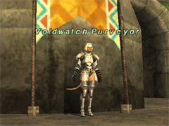
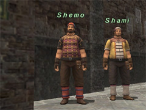
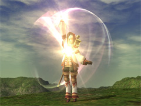
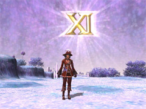
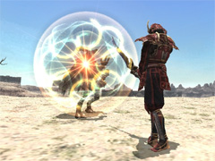
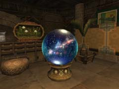
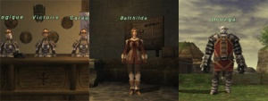
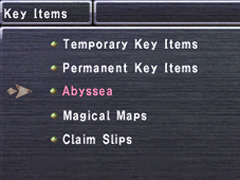
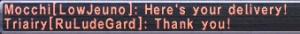

Event-related
- [dev1019] The following adjustments have been made to Voidwatch:
- New vendor NPCs have been added in the following locations to furnish players with ascent items and voiddust. These NPCs have assumed the role formerly served by guards, Imperial gate guards, and Allied Forces guards, who no longer exchange items:
- Al Zahbi / Aht Urhgan Whitegate / Nashmau / Southern San d'Oria (S) / Bastok Markets (S) / Windurst Waters (S) / Southern San d'Oria / Northern San d'Oria / Bastok Mines / Port Bastok / Windurst Waters / Port Windurst / Windurst Woods / Ru'Lude Gardens / Upper Jeuno / Lower Jeuno / Port Jeuno
- 
- Voidwatch Officer NPCs now offer players the option to ask for a single voidstone.
- The names of players who successfully strike enemy weaknesses are now displayed in the log window.
- A new alignment bonus called Synchronic Blitz has been added, which grants players who inflict damage on a weakened enemy a full-spectrum alignment boost based upon the percentage of the monster’s HP depleted.
- A minor full-spectrum alignment bonus based upon the player's Treasure Hunter effect level will now be granted upon defeating an enemy.
- Changes have been made to what spoils players may receive from riftworn pyxides upon defeating enemies.
- Voiddust has been added to treasure caskets in certain Grounds of Valor areas.
- The following refinement has been made to Dynamis:
- It is now more likely that players will be able to strike enemy weaknesses by using weapon skills.
- Changes have been made to objectives and completion rewards for the following individual training regimes:
- Completion rewards for the following training regimes have been altered:
- Outer Horutoto Ruins: Page 1 / Page 2 / Page 3 / Page 4 / Page 5
- King Ranperre's Tomb / Maze of Shakhrami
- The following refinements have been made to Campaign:
- The maximum amount of experience a player may gain per evaluation has been increased.
- The maximum amount of allied notes a player may receive per evaluation has been increased.
- Actions that are subject to evaluation will now grant more points towards the final assessment. The maximum number of points that can be earned for performing these actions has also been increased.
- In accordance with the aforementioned changes, the evaluation standards for union treasure lot eligibility have also been raised.
- Messages stating that a player received zero Allied Notes from a Campaign battle are no longer displayed.
- The following modifications have been made to Besieged:
- The maximum amount of experience players may receive per skirmish has been increased.
- The maximum amount of Imperial Standing players may receive per skirmish has been increased.
- Actions that are subject to evaluation will now grant more points towards the final assessment.
- The maximum evaluation values for target actions have been increased.
- The maximum number of points that can be earned for each force level has been raised.
- The maximum bonus for consecutive victories has been raised.
- The bonus for defeating notorious monsters has been increased.
- The NPC Chululu now offers a new quest.
- It is now possible to repeat both the Collect Tarut Cards quest and this new quest.
- Once you have received tarut cards, you must wait for the next conquest tally before repeating these quests.
- The following NPCs have been repositioned:
- [dev1018] A new exchange NPC for crests and seals named Shemo is now stationed in Port Jeuno (H-8).
- 
- [dev1018] It is now possible to redeem multiple battle trophies at once from a Dominion Tactician in the following areas:
- The conditions for obtaining abyssite from normal enemies have been altered.
Battle-related
- [dev1017] The following job adjustments and refinements have been implemented:

- The area of effect for the thief abilities Accomplice and Collaborator was expanded.
- The paladin ability Cover now raises enmity towards the paladin and lowers enmity towards the party member under attack.
- The effect duration for the paladin ability Cover now takes into account the paladin's VIT.
- The paladin ability Shield Bash now grants a damage bonus based on the type of shield used.
- The paladin ability Divine Emblem now grants a damage bonus to Holy and Banish spells based on the player's divine magic skill.
- The samurai ability Seigan is now augmented with a bonus based on the player's Zanshin attack rate that increases the chance of countering an anticipated attack.
- This change only applies when samurai is set as the main job.
- The samurai ability Hasso will now occasionally trigger Zanshin after landing a normal attack.
- This change only applies when samurai is set as the main job.
- The ninja abilities Innin and Yonin no longer share the same recast timer.
- The recast times for the ninja abilities Innin and Yonin have been reduced from five minutes to three minutes.
- It is now possible to perform skillchains and magic bursts with blue magic while the blue mage ability Azure Lore is in effect.
- The following bonus effects now activate when the corsair ability Phantom Roll produces an XI:
- The recast time for Phantom Roll will reset.
- While under the effect of an XI roll, the recast time for Phantom Roll will now be reduced to thirty seconds.
- While under the effect of an XI roll, busting will not reduce the amount of rolls that rollers can place on themselves.
- 
- The following job ability has been added:
- Konzen-ittai (SAM Lv. 65, Recast Time: 3 Minutes, Effect Duration: 1 Minute)
- Readies target for a skillchain.
- 
- The effectiveness of the samurai job trait Store TP now increases at level 90 instead of 91.
- The following automaton attachments have been added:
| Name
|
Effect
|
| Barrier Module
|
An earth-based automaton attachment.
Functionality: Increases chance of blocking with shield
Earth Maneuver: Adds Shield Mastery and shortens Shield Bash recast time
|
| Percolator
|
A water-based automaton attachment.
Functionality: Increases skill gain rate
|
| Vivi-Valve
|
A light-based automaton attachment.
Functionality: Increases "Cure" potency
|
| Disruptor
|
A darkness-based automaton attachment.
Functionality: Use "Dispel"
|
|
- During the window of time in which players may perform magic bursts after a skillchain, the target's resistance to the skillchain's corresponding element(s) will now decrease.
- Respawn times for certain monsters the following areas have been adjusted:
- Bostaunieux Oubliette / Outer Horutoto Ruins
Item-related
- A new synthesis recipe has been added:

<Rank: Amateur>
- The above synthesis recipe can be used during the Sunbreeze Festival scheduled for August 2011.
- A new synergy recipe has been added:
<Rank: Artisan>
- Equipment vendor NPCs have been introduced to the following areas:
- 
- The array of equipment sold by vendor NPCs in San d'Oria, Bastok, and Windurst has received major revisions. Furthermore, whether or not certain equipment will appear in a vendor's inventory will no longer depend upon the Conquest hierarchy.
- The following items have been made storable with the porter moogle service:
- Animator +1
- Ravager's Earring / Tantra Earring / Orison Earring / Goetia Earring / Estoqueur's Earring / Raider's Earring / Creed Earring / Bale Earring / Ferine Earring / Aoidos' Earring / Sylvan Earring / Unkai Mimikazari / Iga Mimikazari / Lancer's Earring / Caller's Earring / Mavi Earring / Navarch's Earring / Cirque Earring / Charis Earring / Savant's Earring
- Novennial Coat / Novennial Hose / Novennial Dress / Novennial Boots / Destrier Beret / Charity Cap
- Destinations have been added to the "Enchant: Teleport" help text of the following items:
- [dev1018] Porter Moogles have been introduced to the following areas:
- Selbina / Mhaura / Rabao / Kazham / Norg / Nashmau / Southern San d'Oria (S) / Bastok Markets (S) / Windurst Waters (S)
System-related
- The icon shown above characters is now more detailed in the Windows and Xbox 360 versions of the game.
- The title screen menu is now more detailed in the Windows and Xbox 360 versions of the game.
- The maximum resolution of the back buffer, which can be adjusted in the Screen Size menu under FINAL FANTASY XI Config in the Windows version, has been increased to 2048 x 2048.
- A new Abyssea category has been added for key items.
- 
- The new chat command Yell has been added.
- The /yell command sends a message to all PCs within the areas below:
- Ru'Lude Gardens / Upper Jeuno / Lower Jeuno / Port Jeuno
- Yell messages are displayed in the chat window in the following order: PC name, area, message content.
- 
- Yell cannot be set as a default chat mode with the /chatmode command.
- A new chat filter category for Yell has been added.
- This filter will always be toggled on by default upon login.
- A new text command called /yellsw has been added.
- Toggles the [Yell] chat filter on/off.
- on: [Yell] chat filter on.
- off: [Yell] chat filter off.
- Toggles on and off when no subcommand is specified.
Resolved Issues
- The following issues have been corrected:
- The issue wherein defeating a Voidwatch enemy under certain circumstances would disallow the opening of a riftworn pyxis.
- The issue wherein starting a battle under certain conditions in Voidwatch would nullify confrontation status, resulting in the inability to engage the enemy.
- The issue wherein the wrong temporary items would be periodically distributed in older Voidwatch areas.
- This issue wherein the Grounds of Valor field supports "Field recipe: Dry Agaricus" and "Field recipe: Instant Rice" may not have granted the intended effect.
- The issue wherein the effect of the Grounds of Valor field support "White magic: Haste" would occasionally be nullified when under the effect of Slow.
- The issue wherein the grounds tome in Beaucedine Glacier displayed an incorrect target level range on page one.
- The issue wherein having Reraise cast on a player during Besieged, Bastion, or Walk of Echoes caused an incorrect evaluation of the previously KO'd player.
- The issue wherein the Dynamis - Xarcabard NMs King Zagan and Count Vine may, under certain conditions, have failed to spawn.
- The issue in wherein trading a timeless hourglass to Hieroglyphics in the following areas caused the area name to display incorrectly:
- Tavnazian Safehold / Valkurm Dunes / Buburimu Peninsula / Qufim Island
- The issue wherein a fellow's weapon skill usage counted toward certain Magian Trials trial criteria.
- The issue wherein the name of the player who struck an Abbyssean fiend's weakness would be incorrectly displayed in the system message if another party member uses magic or a weapon skill at the same time.
- The issue wherein the window in which players could use a blunt damage weapon skill to strike an Abyssean fiend's weakness was longer than intended.
- The issue wherein the Abyssea - Altepa NM Ouzelum may absorb damage under unintended conditions.
- The issue wherein the Abyssea - Uleguerand NM Yaguarogui may absorb damage under unintended conditions.
- The issue wherein players would, under certain conditions, become unable to complete the Abyssea - Tahrongi quest Sisters in Crime.
- The issue wherein an enemy's weakness would be improperly displayed if an abyssite of discernment's effect triggered at the same time that enemy was claimed via a magic attack.
- The issue wherein, if two or more players simultaneously used abyssite to summon a notorious monster, the abyssite would be consumed even if the players were not able to claim the NM.
- The issue wherein the log would display an activation message for Cover if the paladin was hit with an AoE physical attack while under the ability's effect.
- The issue wherein the log would display smaller damage amounts than actually dealt by the avatar Ifrit's blood pacts Rage and Burning Strike.
- The issue wherein the number of abilities drained would read zero when the avatar Diabolos' blood pact Ultimate Terror succeeded in draining enemy attributes.
- The issue wherein switching blue mage from main to support job would occasionally interfere with the player's blue magic setup.
- The issue wherein the help message for the automaton attachment Ice Maker erroneously read, "…when casting magic spells," instead of, "…when casting elemental magic spells."
- The issue wherein the effect of the automaton attachments Attuner and Target Marker did not apply to melee weapon skills.
- The issue wherein the effects of the ninjutsu Myoshu: Ichi and Yurin: Ichi were reversed.
- The issue wherein the rate of activation was lower than intended for the "Set: Augments elemental resistance spells" effect of the white mage's Empyrean +2 Armor set.
- The issue wherein the log would not display the proper amount of damage or skillchain damage dealt if a certain amount was exceeded with a single attack.
- The issue wherein players would receive messages stating that they are unable to access support job abilities when forced to exit a battlefield (including KO) which imposed the aforementioned restriction.
- The issue wherein players would sometimes be unable to receive either experience, gil, or loot from enemies in Castle Oztroja after completing the quest At Journey's End.
- The issue wherein players were unable to use the weapon skills associated with level 90 relic and mythic weapons after dropping below level 90 via Level Sync or another method.
- The issue wherein equipping a weapon offering "sword enhancement spell damage +X" as a sub-weapon would grant the same effect to the main weapon.
- The issue wherein an incorrect icon was displayed for the item Achilles' Spear.
- The issue wherein the help message for the item Save the Queen mistakenly read "Cover +1" instead of "Cover +5."
- The issue wherein equipping the items Cadushi Grip, Oneiros Grip, or Ossa Grip reduced players' attack speed.
- The issue wherein the fireworks sold by the Celebratory Chests in Chateau d'Oraguille, Metalworks, and Heavens Tower were more expensive than intended.
- The issue wherein Super Kupowers did not increase the likelihood that Treasure Caskets would spawn in dungeons.
- The issue wherein the auction house NPCs' explanation dialogue was outdated.
- The issue wherein information regarding bait for certain fish was incorrect.
- The issue wherein players' cruor balances were incorrectly displayed after the Atmatic Refiner NPC infused atmacite for them.
- The issue wherein using magic directly after resisting a status ailment caused the word "Resist!" to display at the beginning of the magic casting message.
|

{kind=link}
{kind=link}
{kind=link}
{kind=link}
{kind=link}
{kind=link}
{kind=link}
{kind=link}
{kind=link}
{kind=link}